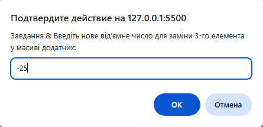
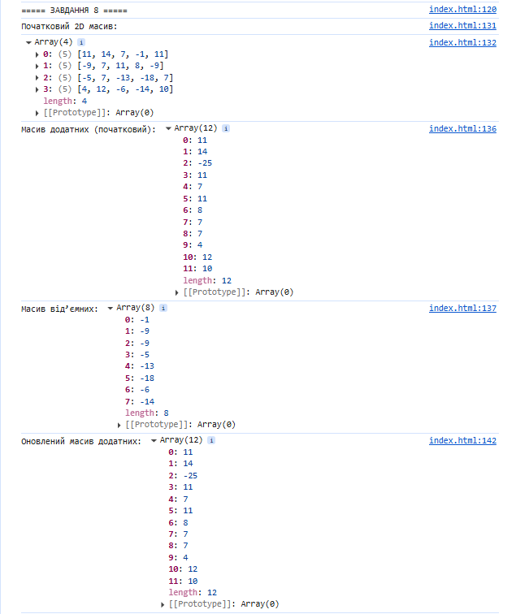

console.log("===== ЗАВДАННЯ 8 ====="); function generate2D(rows, cols) { let matrix = []; for (let i = 0; i < rows; i++) { let row = []; for (let j = 0; j < cols; j++) row.push(Math.floor(Math.random() * 40) - 20); matrix.push(row); } return matrix; } let matrix = generate2D(4, 5); console.log("Початковий 2D масив:"); console.table(matrix); let positives = [], negatives = []; for (let row of matrix) for (let num of row) if (num >= 0) positives.push(num); else negatives.push(num); if (positives.length >= 3 && positives[2] < 0) positives[2] = Math.floor(Math.random() * 20) + 1; console.log("Масив додатних (початковий):", positives); console.log("Масив від’ємних:", negatives); if (positives.length >= 3) { let newNeg = Number(prompt("Завдання 8: Введіть нове від’ємне число для заміни 3-го елемента у масиві додатних:")); positives[2] = newNeg; } console.log("Оновлений масив додатних:", positives);

